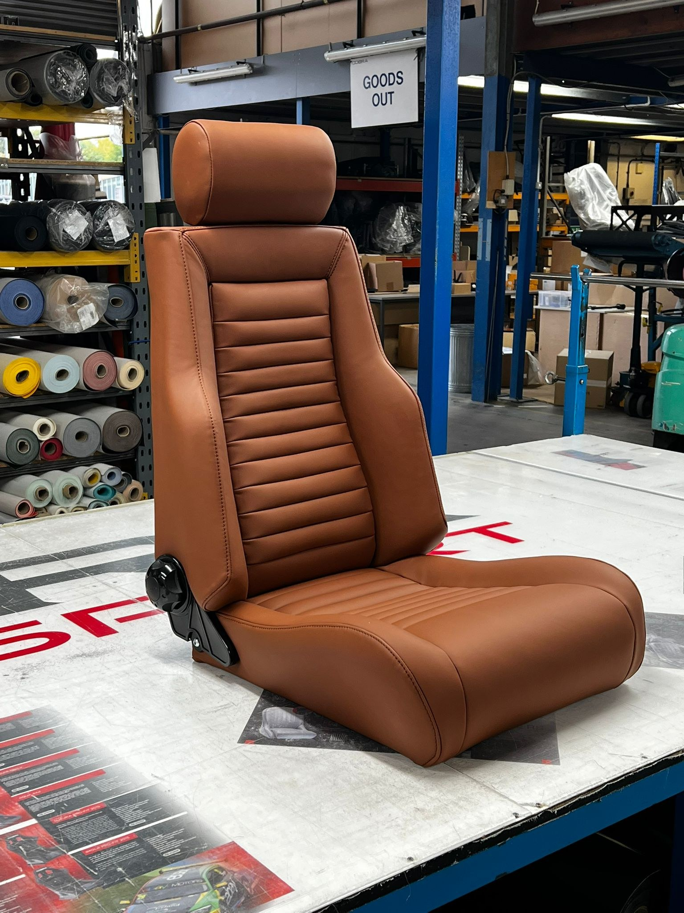
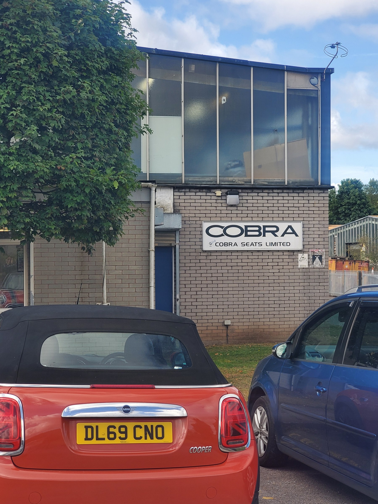
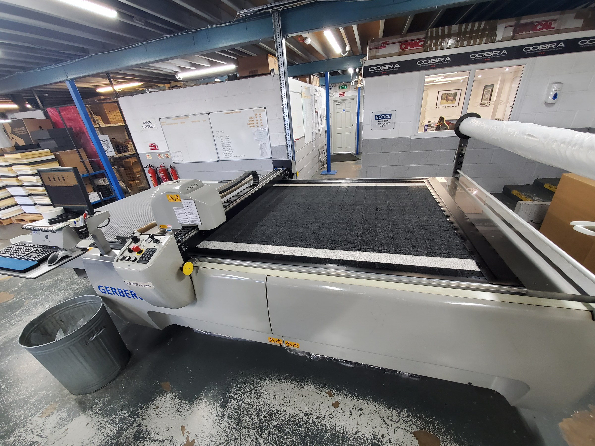
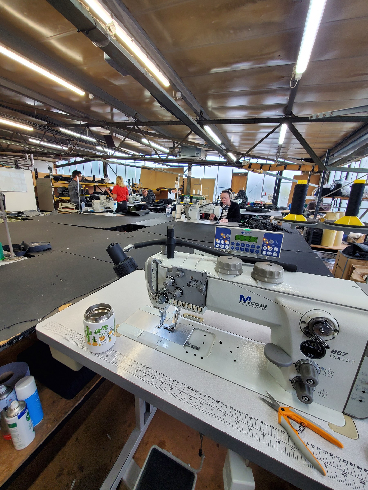
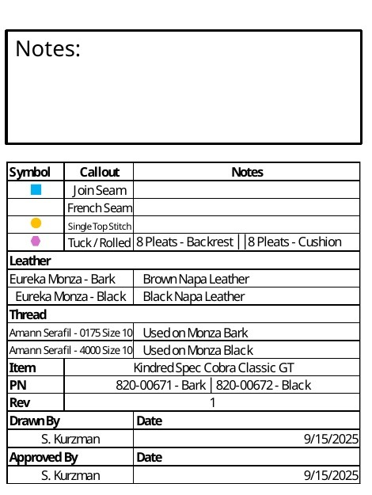
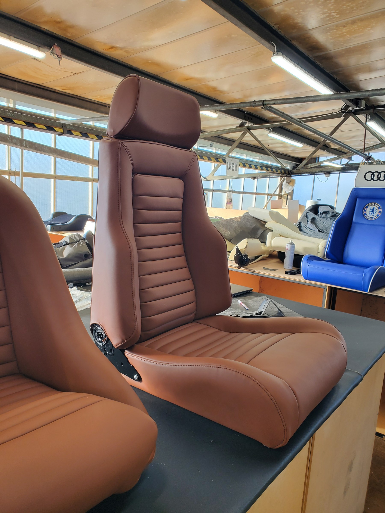
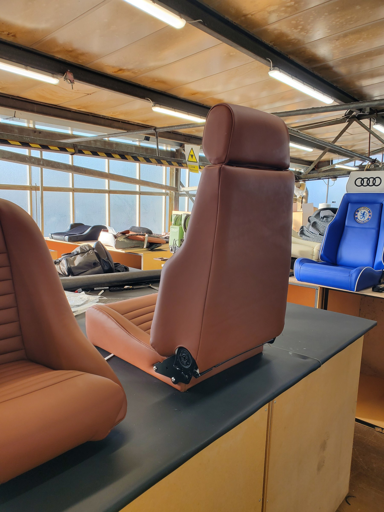
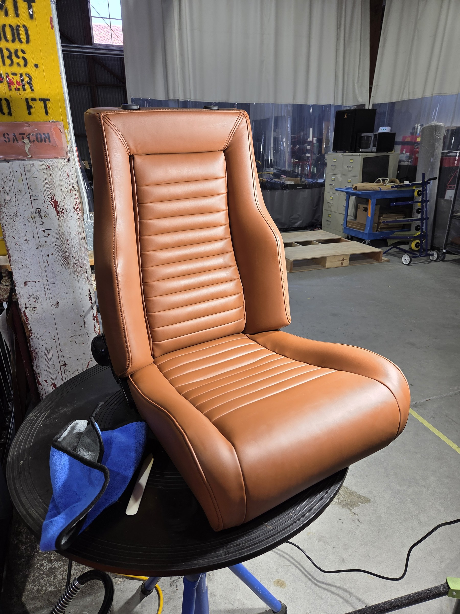
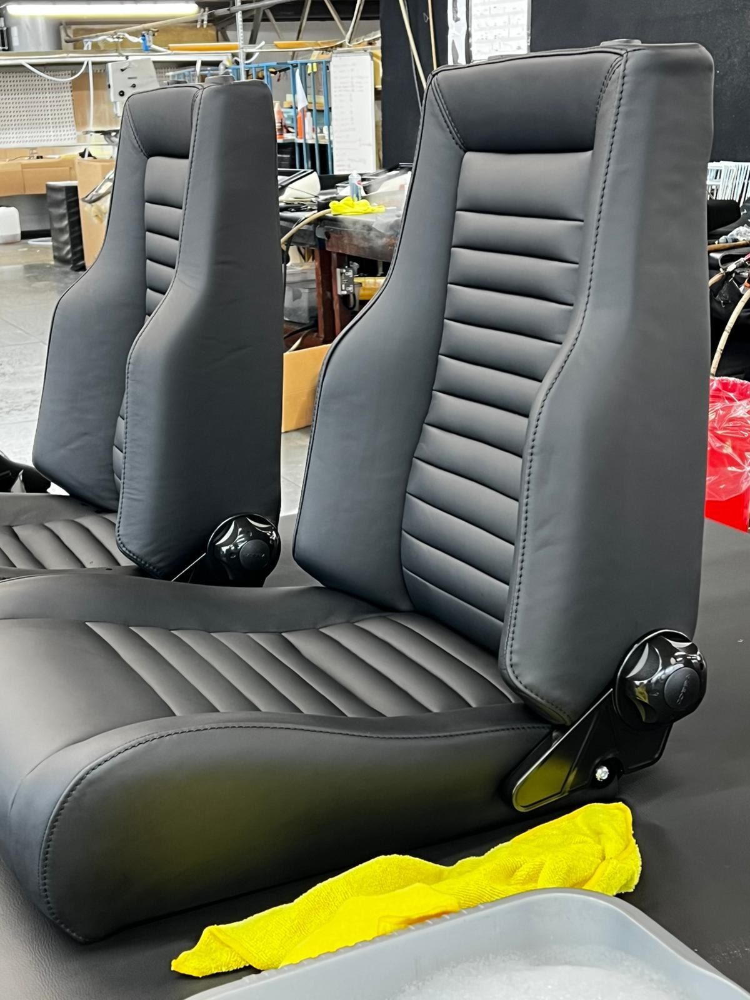

Leading a Tier supplier from product definition through production readiness.
A seating supplier transition that required technical development, not simply a new source. I led the path across product requirements, cost, schedule, risk, first-article quality and onsite manufacturing development to bring Cobra UK to specification-ready production under a compressed launch window.

Replace a critical seating path without losing the launch window.
When the incumbent front-seat path became unavailable, I proposed consolidating front and rear seating with Cobra UK. The new path had to preserve Kindred’s design intent, integrate heating and vehicle-specific requirements, control delivered cost, and move from supplier first articles to repeatable production on a compressed schedule.

Supplier development as a program function.
I served as the primary technical interface between Cobra and the internal team, keeping design intent, development lift, cost, timing, risk and fallback paths visible on both sides.
The work required judgment as much as follow-through: distinguish launch-critical changes from unnecessary development, communicate the tradeoffs clearly, and keep the supplier moving toward a repeatable production condition.
Understand the manufacturing system before asking it to change.
The onsite review began with the manufacturing system itself: equipment, cut-and-sew capability, physical pattern control, fabrication, build stations, operator methods and available engineering support. Understanding that system determined which issues could be corrected immediately and which required deeper development.
Cobra Seats Ltd · UK
The visit was not only an article inspection. It was a capability assessment: how the supplier worked, what equipment was available, where the process depended on legacy knowledge, and how Kindred requirements could be integrated into a repeatable production system.




Make technical tradeoffs visible before they become schedule problems.
Supplier work was managed through recurring development reviews that tracked priority, technical lift, cost implication and launch impact. The purpose was not to pursue every possible improvement; it was to protect the critical path while giving the internal team a clear view of risk and decision points.
Representative items from the working supplier-development path. The original program tracking was used to communicate tradeoffs and distinguish launch-critical changes from longer-term supplier improvements.
Translate design intent into manufacturing language.
Once the supplier path was defined, the product had to be explicit. I created sewing and quality requirements, controlled configuration information, material/thread definitions and article feedback so execution was driven by documented requirements rather than verbal interpretation or legacy knowledge.
What the supplier needed to control
- Pleat architecture and visual spacing
- Join seams, French seams and perimeter topstitching
- Thread, needle, stitch length and topstitch offset
- Pattern alignment and allowable sewing conditions
- Material / thread configuration and revision status
- Seat-specific construction and retention details



Move from subjective feedback to process-level correction.
The first articles were not production-ready. Rather than treating the issues as isolated cosmetic defects, I worked directly with Cobra technicians to identify how foam mass, sewing setup, pattern geometry, retention and assembly sequence were creating variation, then corrected the underlying process.




Foam + surface control
Trained trimming techniques around pleats and joining seams, then adjusted stitch count to support a flatter, more unified A-surface.
Sewing setup
Changed needle size/type and thread-tension setup for the specified thread; removed a perimeter-sewing step that restricted material stretch.
Retention + patterns
Revised LeMans patterns to J-to-J retention, changed the Classic GT internal listing method, and tuned production patterns before release.
Production readiness is a decision, not an assumption.
The onsite objective was to establish what had reached a repeatable state, what remained at risk, and what action was required next. I did not treat schedule pressure as a reason to approve an article that still needed development.
Classic GT
Patterns and construction methods had reached a repeatable state suitable for production release.
LeMans
The base development was acceptable, but backrest tuning remained open rather than being prematurely released.
The result had to work beyond the first approved seat.
Once the construction methods, patterns, sewing setup and quality expectations were controlled, Cobra could move from development articles into batch production while preserving the intended A-surface execution.



Vehicle-set production requirement under a compressed launch window.
Onsite UK development sprint for article inspection, pattern/process tuning and production decisions.
Lower delivered front-and-rear seating-package cost versus the incumbent approach—approximately $2,000 per vehicle.
The seats arrived on time and met the defined quality expectations. The broader value was the operating model: define the product clearly, keep cost, timing and risk visible, understand the supplier’s manufacturing system, work directly at process level when necessary, and translate production status back to the internal team in terms they can act on.